Mapa propagacji prawie na cały ekran, źródło danych: propagation.dr2w.de (live z internetu, tak jak AQI/prognoza).
Na dole: pasek regionów (dotyk) — EU / NA / AF / SA / AS / OC oraz pasek pasm (dotyk) — 80M…10M.
Po dotknięciu pasma lub regionu pobierana jest nowa mapa dla wybranych danych (aktualna godzina UTC).
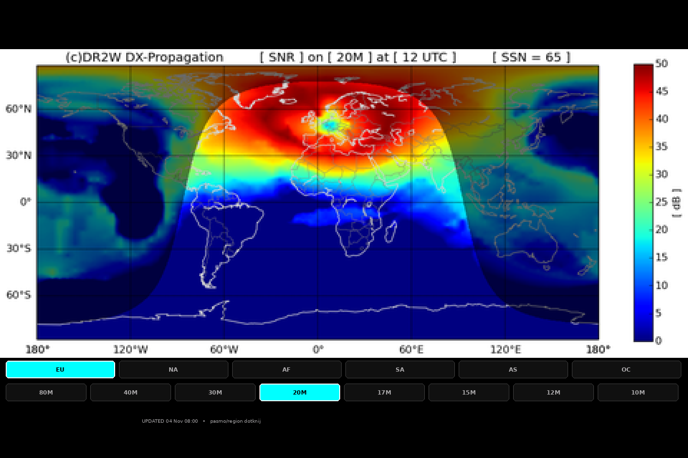
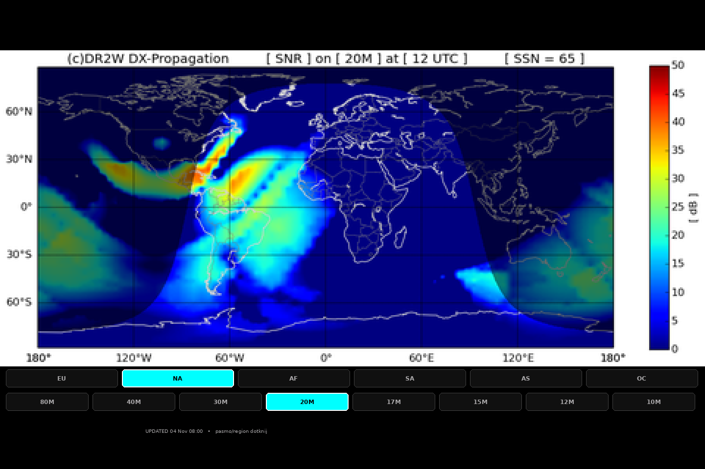
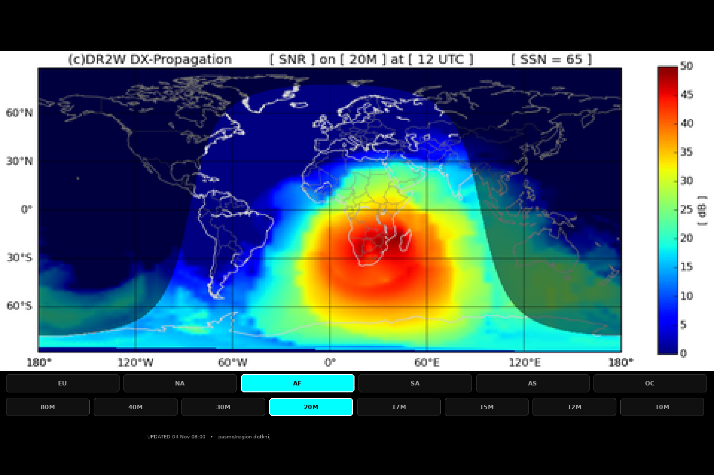
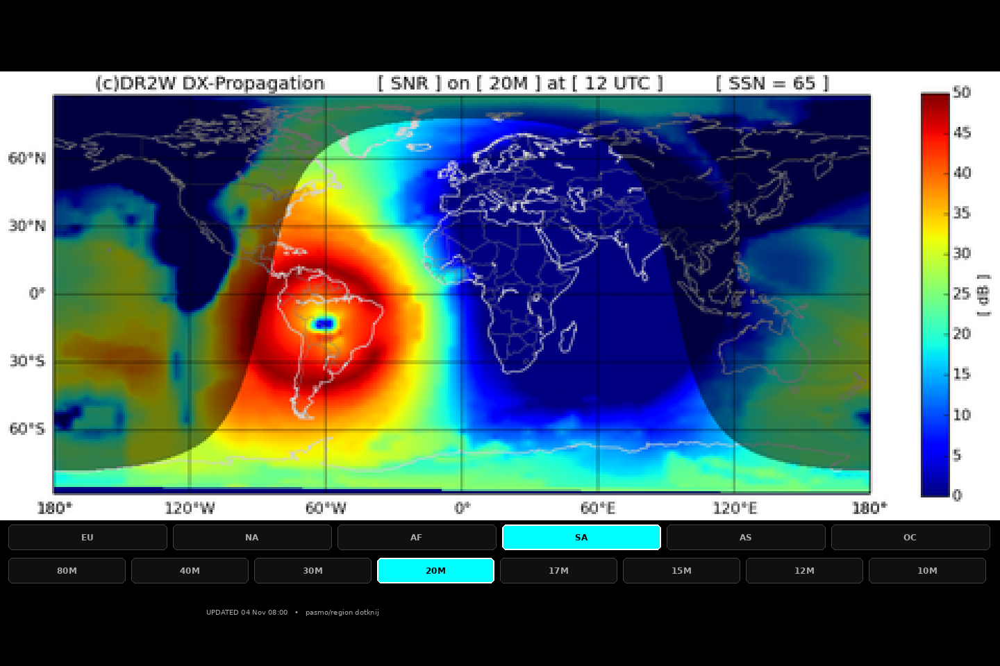
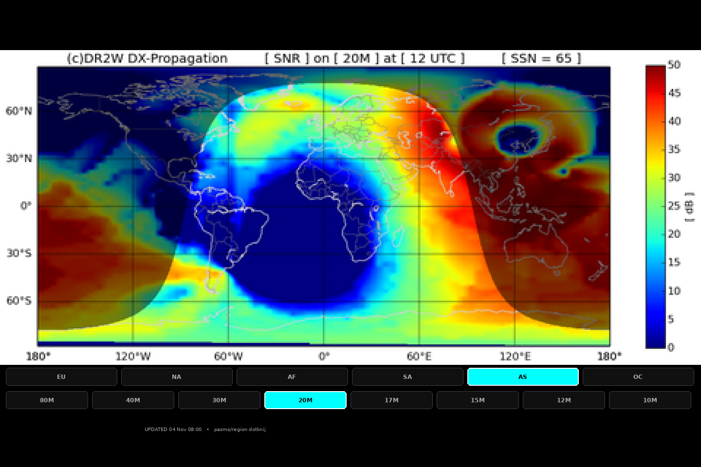
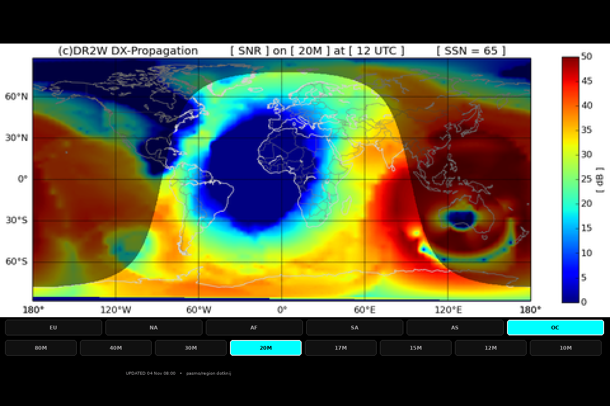
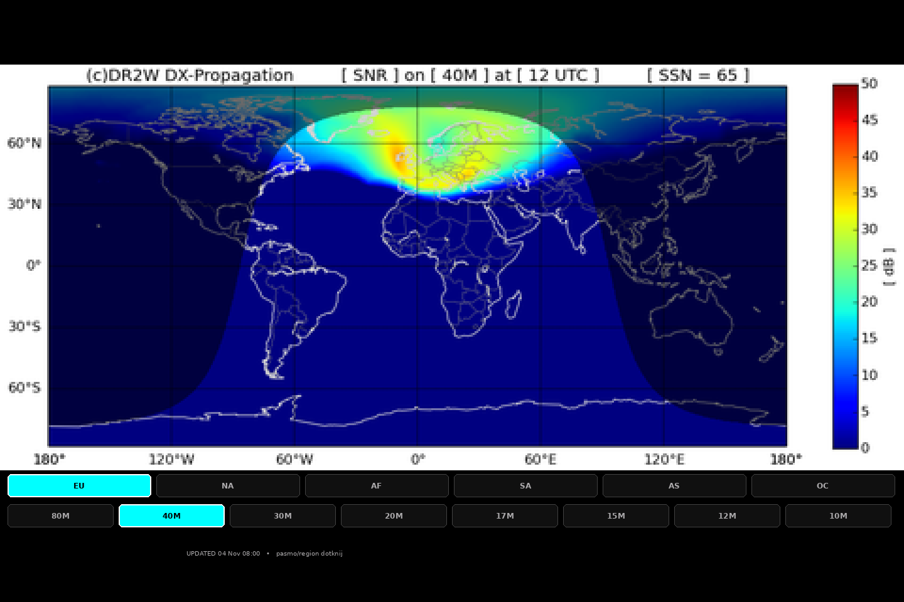
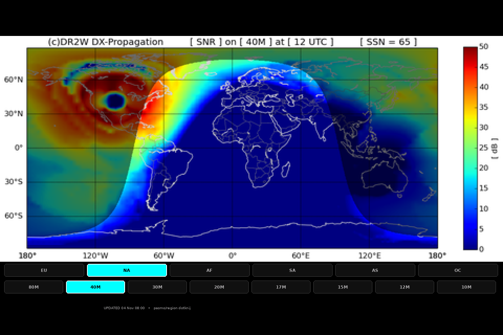
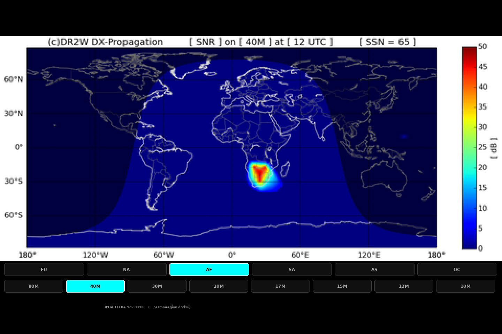
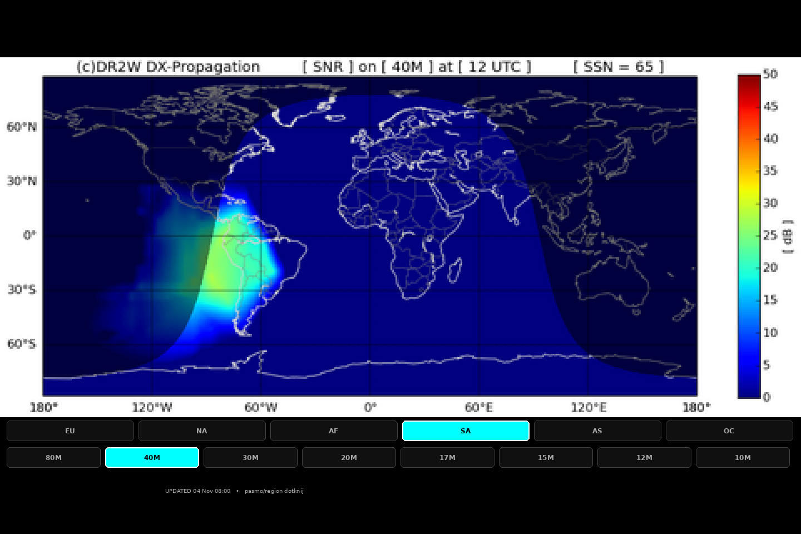
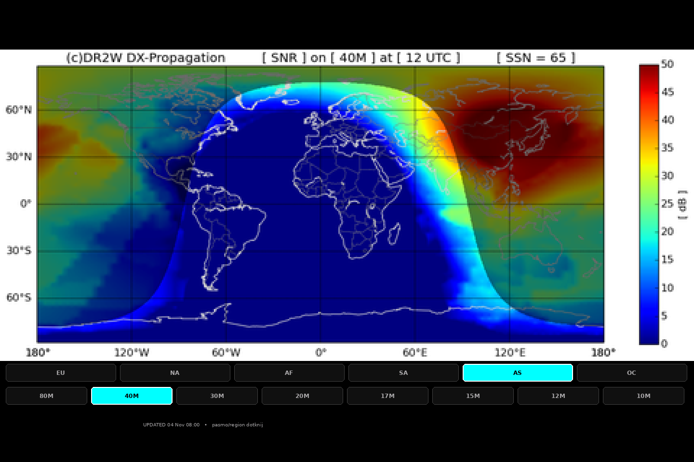
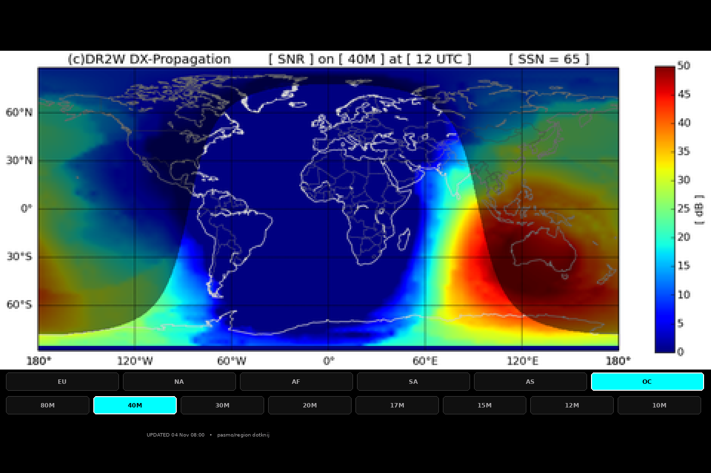
Na żywo na urządzeniu mapa będzie się zmieniać wg aktualnej godziny UTC (im ciemniejsza nocna strona, tym inne ścieżki). Źródło: propagation.dr2w.de (darmowy serwis DX).